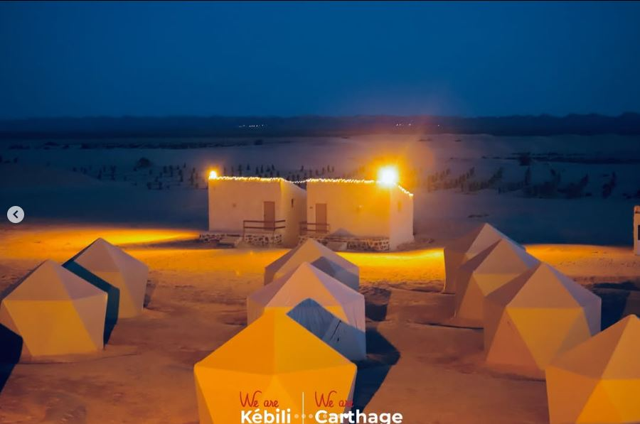
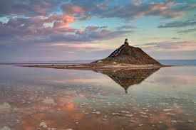
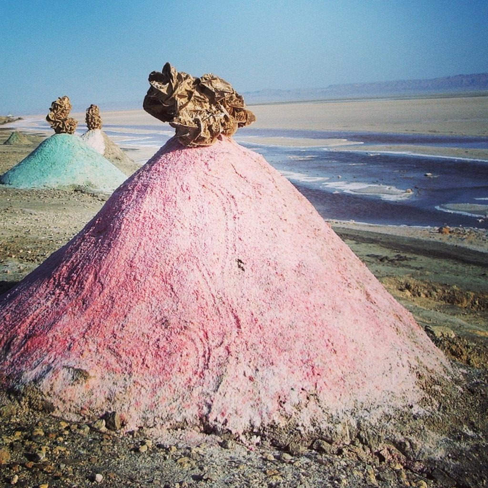
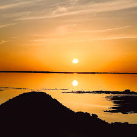
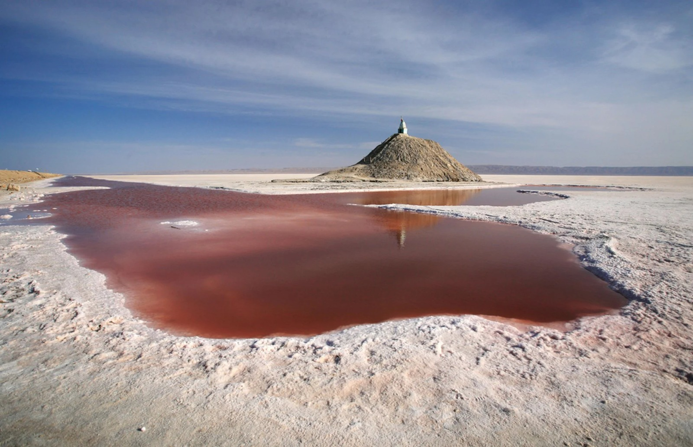
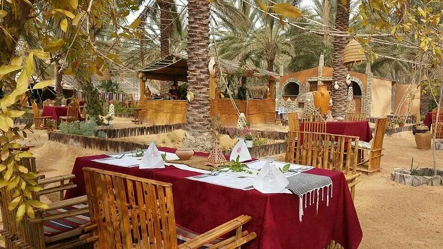
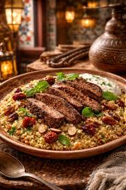
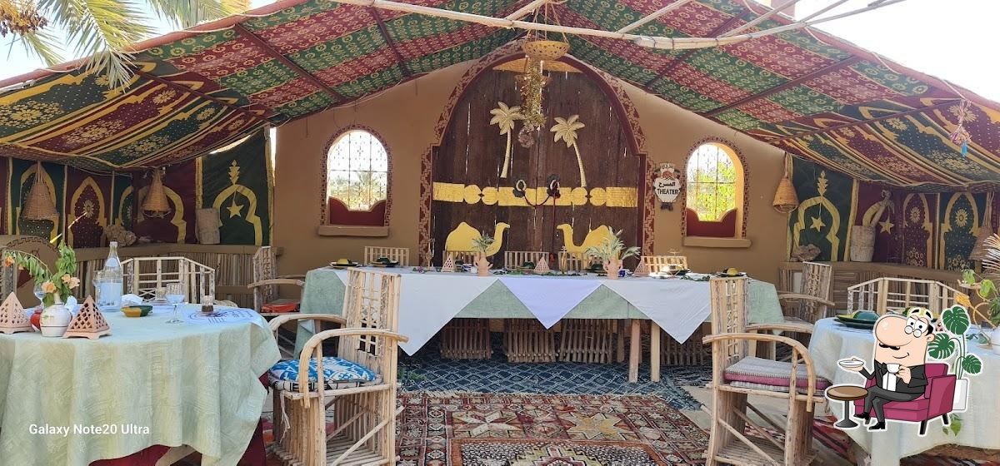
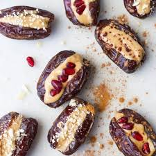

Camp Ain El Seid
A unique desert camp offering authentic southern Tunisian experiences — camel rides, cultural workshops, and stargazing nights in the Sahara. Located near the oasis of Limaguess, this eco-friendly camp combines traditional Berber hospitality with modern comfort, making it the perfect base to explore the Kebili region.
- Activities: Camel rides, ATV excursions, sandboarding, cultural workshops (pottery, weaving, cooking)
- Tip: Best visited October–April. Bring warm layers for chilly desert nights!

Chott el Jerid
The largest salt pan in the Sahara, stretching over 5,000 km² across southern Tunisia. This surreal landscape of white salt crystals and mirages offers spectacular sunset views and unique photo opportunities. During winter, a thin layer of water creates perfect mirror reflections of the sky.




Restaurant El Bey
A beloved family-run restaurant in the heart of Kebili town, serving authentic southern Tunisian cuisine. Famous for their camel meat couscous, traditional "Mloukhiya", and fresh local dates from the surrounding oases. The warm hospitality and cozy atmosphere make it a favorite among travelers exploring the Sahara region.



🍽️ Menu highlights (TND – Tunisian Dinar):
| Dish | Price (DT) | Description |
|---|---|---|
| Couscous aux poissons | 22 DT | Fish couscous with local spices |
| Camel meat couscous | 28 DT | Regional specialty — tender camel meat |
| Ojja (spicy egg stew) | 12 DT | Traditional breakfast favorite |
| Fresh Deglet Nour dates | 8 DT | Kebili's famous premium dates |
| Mint tea + pastries | 5 DT | Authentic Tunisian hospitality |
"Kebili where the Sahara begins, where salt flats mirror the sky, and where the desert night sings you to sleep under a blanket of stars."